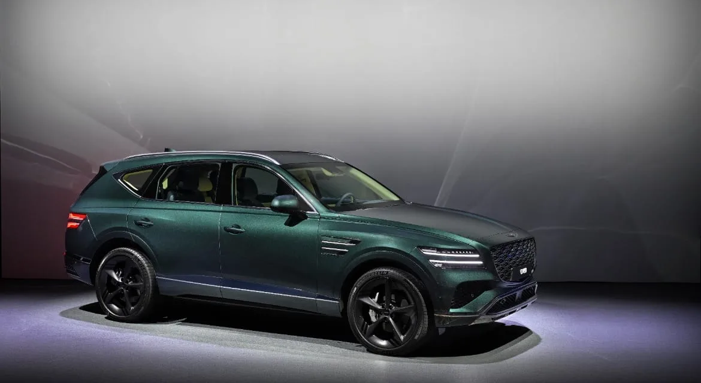

▲ 제네시스 브랜드 최초의 하이브리드 SUV인 GV80 하이브리드가 내달 출시를 앞두고 있다
1. 첫 하이브리드, 관건은 '가격표'
제네시스 브랜드를 상징하는 플래그십 SUV GV80이 브랜드 최초의 하이브리드 모델 출시를 앞두고 프리미엄 SUV 시장의 기대를 한 몸에 받고 있다. 오토트리뷴 보도에 따르면, 현대차그룹이 제네시스 전용으로 개발한 후륜구동 2.5 터보 하이브리드 파워트레인이 처음 탑재되는 만큼, 그에 따른 가격 책정이 흥행의 주요 변수로 꼽힌다.
2. 대중형과 다른 '럭셔리 전용' 하이브리드
그동안 현대차·기아의 대중형 하이브리드는 전륜구동 기반 1.6 터보 시스템이 주를 이뤘다. 이 경우 내연기관 대비 가격 인상 폭은 500만~600만 원 수준에 형성돼 왔다.
반면 GV80 하이브리드는 럭셔리 브랜드의 동력 성능과 최고 수준의 정숙성·승차감을 지키기 위해 별도로 개발된 전용 후륜 하이브리드 시스템이다. 2.5 터보 엔진에 P1·P2 두 개의 모터를 병렬 배치해 합산 최고출력 352마력, 최대토크 54.0kgf·m의 성능을 낸다. 수랭식 배터리와 후진 기어부를 없앤 신규 후륜 7단 변속기 등 전동화 부품 원가와 개발 비용이 반영되면서, 기존 2.5 가솔린 대비 가격 인상 폭은 1,000만 원 안팎에 달할 것으로 업계는 내다본다.

▲ GV80 하이브리드는 전용 후륜 파워트레인 개발에 따른 부품·개발비가 가격에 반영될 전망이다 ⓒ Genesis

▲ GV80 하이브리드는 대중형 하이브리드와 달리 후륜구동 전용으로 개발된 2.5 터보 하이브리드 시스템을 탑재한다 ⓒ Genesis
3. '8,000만 원 미만', 체감 심리 저항선이 관건
업계에서는 GV80 하이브리드의 엔트리 시작가가 7,900만 원에서 8,000만 원 초반 선에서 결정될 것으로 내다보고 있다. 소비자가 느끼는 심리적 마지노선인 '8,000만 원 미만'에 턱걸이할 수 있느냐가 핵심 관전 포인트다. 현재 판매 중인 GV80 2.5 가솔린 모델의 시작가가 6,886만 원인 점을 고려하면, 하이브리드 모델과의 격차는 약 1,000만~1,200만 원 수준에서 형성될 것으로 관측된다.
📍 왜 1,000만 원이 기준선인가
가솔린 모델과의 가격 차이가 1,000만 원 이내로 묶일 경우, 고유가 시대에 고연비와 강력한 출력을 동시에 확보하려는 프리미엄 고객층의 유입이 대거 몰릴 것으로 업계는 기대하고 있다.
4. "렉서스 RX 350h와 800만 원 차이"
제네시스가 겨냥하는 정면 라이벌은 수입 프리미엄 하이브리드 SUV 시장의 강자인 렉서스 RX 350h다. 현재 RX 350h의 시작 가격은 8,790만 원으로 9,000만 원에 육박한다.
GV80 하이브리드가 7,900만 원대 시작가를 확보할 경우, 렉서스 RX 대비 800만 원 이상의 직관적인 가격 경쟁력을 보유하게 된다. 여기에 27인치 파노라믹 디스플레이, 첨단 운전자 보조 시스템(ADAS), 국내 전역의 압도적인 정비 인프라가 결합되면 수입 하이브리드 대기 수요를 흡수하기에 충분하다는 평가다.
✅ GV80 하이브리드 vs 렉서스 RX 350h (전망 기준)
· GV80 하이브리드 예상 시작가: 7,900만~8,000만 원 초반
· 렉서스 RX 350h 시작가: 8,790만 원
· 예상 가격차: 800만 원 이상
· GV80 강점: 27인치 파노라믹 디스플레이, ADAS, 국내 정비 인프라

▲ 27인치 파노라믹 디스플레이와 ADAS 등 상품성도 렉서스 RX 350h와의 경쟁에서 내세우는 요소다 ⓒ Genesis
5. 시장의 시선
자동차 시장 분석가는 오토트리뷴과의 인터뷰에서 "제네시스 첫 하이브리드라는 상징성과 전용 후륜 파워트레인의 상품성이 명확한 만큼, 8,000만 원 경계선에서 책정될 초기 가격표가 수입 SUV들과의 주도권 싸움을 결정지을 것"이라고 전망했다.
다만 현재까지 나온 가격 수치는 모두 공식 발표 전 업계 전망치다. 제네시스 관계자는 언론 취재에 "가격은 아직 확정되지 않았으며 판매 개시 시점에 공개할 예정"이라고 밝혔으며, 이 기사 작성 시점(2026년 9월 25일)까지도 트림별 세부 가격과 정확한 출시일은 공식적으로 확정되지 않은 상태다.

▲ 제네시스는 판매 개시 시점에 맞춰 GV80 하이브리드의 공식 가격을 공개한다는 방침이다 ⓒ Genesis

▲ GV80 하이브리드의 정확한 트림별 가격과 출시일은 아직 공식 발표되지 않았다 ⓒ Genesis
6. 요약
제네시스 GV80 하이브리드가 내달 출시를 앞두고 출고가에 관심이 쏠리고 있다. 후륜구동 2.5 터보 하이브리드(352마력·54.0kgf·m)를 탑재하며, 가솔린 대비 가격 인상 폭은 1,000만 원 안팎으로 예상된다.
업계는 엔트리 시작가를 7,900만~8,000만 원 초반대로 전망하며, 이는 경쟁 모델인 렉서스 RX 350h(8,790만 원)보다 800만 원 이상 저렴한 수준이다. 현재 GV80 2.5 가솔린 모델의 시작가(6,886만 원)를 기준으로 하면 가격 격차는 약 1,000만~1,200만 원 수준이 될 전망이다. 다만 이는 공식 발표 전 업계 전망치이며, 제네시스는 트림별 확정 가격을 판매 개시 시점인 2026년 10월에 공개할 예정이다.